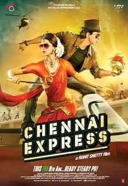

SRK MANIA
Home
Songs
Movies

Chennai Express (2013)
Label: T-Series
1234 Get On The Dance Floor
Titli
Tera Rasta Chodoon Na
Kashmir Mai Tu Kanyakuamri
Chennai Express
Lungi Dance
Songs may take some time to load.
To download right click on the play/pause button and click 'save audio as' option.